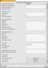
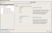
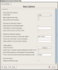
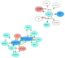

| Project Links | |||||||||
|---|---|---|---|---|---|---|---|---|---|
| Download | SF Project Page | Mailing Lists | CVS | Bug Database | |||||
The goal of the DNSSEC-Tools project is to create a set of tools, patches, applications, wrappers, extensions, and plugins that will help ease the deployment of DNSSEC related technologies.
Get dnssec-tools 0.1!
Most of the tools below are under very active development. Our first alpha 0.1 (but contains very usable results) was published May 05, 2005.
Software components available in the dnssec-tools 0.1 release:
| Tool | Description | Screen-Shots |
|---|---|---|
| zonesigner: | A zone database signing utility that takes care of all necessary steps to sign and maintain a zone with as little hassle as possible. |  Example Output |
| donuts: | A dnslint like application to analyze zone files. Specifically tailored to dnssec but also tests for more general (non-dnssec) problems. | 
Example Output |
| mapper: | Maps DNS realms color coding the results to allow for easy visual interpretation of the results. Color codes are based on record types and/or errors and warnings. |  |
| ifup-dyn-dns: | A linux ifup addition that propagates current IP addresses into a live zone(s) using dynamic DNS. Allows for security to be used as well so transfers are properly authenticated. |
| Net::DNS::SEC::Tools::conf: | Parses Net::DNS::SEC::Tools specific configuration files |
| Net::DNS::SEC::Tools::keyrec: | Manipulates key records for the dnssec-tools that deal with keys |
| Net::DNS::SEC::Tools::tooloptions: | Implement option lists for perl based dnssec-tools for key manipulation. |
| Sendmail / Postfix / libspf | A patch to validate SPF rules, incoming connections, etc against DNSsec records to ensure lookups within MTAs are not using spoofed DNS records. |
| Thunderbird | A plugin which automatically displays the DNSSEC validation headers in the Thunderbird E-Mail reader |
| Mozilla | A patch which enables DNSSEC validation of DNS lookups in the Mozilla application suite (browser, etc). |
| LogWatch | A configuration plugin to logwatch to have logwatch perform DNSSEC parsing of system logging messages from running bind servers. |
| Perl Module: Net::DNS::ZoneFile::Fast | A patch to support parsing DNSSEC records. |
We have a number of Mailing Lists to which you can subscribe
This work is funded in part by the following organizations:
{kind=link}
{kind=link}
{kind=link}
{kind=link}